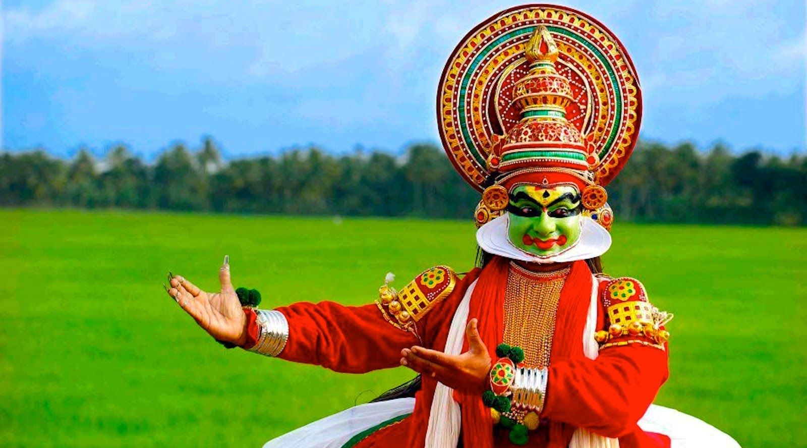

ENJOY TRADITIONAL ART FORMS

You are here to explore one of the most beautifull places on earth KERALA is well known for its abundancy in traditional art forms,culture,weather,foods and festivals. we will take you through all the fourteen districts in kerala. LET'S START JOURNEY HERE
"Making better places for people to live in and better places for people to visit"
RT Mission is the nodal agency formed by the Government of Kerala to spread and implement the ideologies and initiatives of Responsible Tourism all over the State. Mr. Pinarayi Vijayan, Chief Minister of Kerala launched the Responsible Tourism Mission on 20th October 2017. The Mission is envisaged with a 'triple-bottom-line' mission which comprises economic, social and environmental responsibilities. Making tourism a tool for the development of village and local communities, eradicating poverty and giving emphasis to women empowerment are the main aims of the Responsible Tourism Mission. The mission aspires to provide an additional income and a better livelihood to farmers, traditional artisans, and marginalised people along with creating a social and environmental equilibrium.